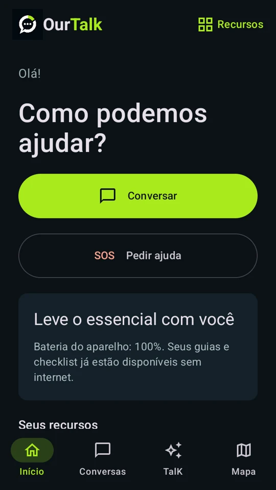
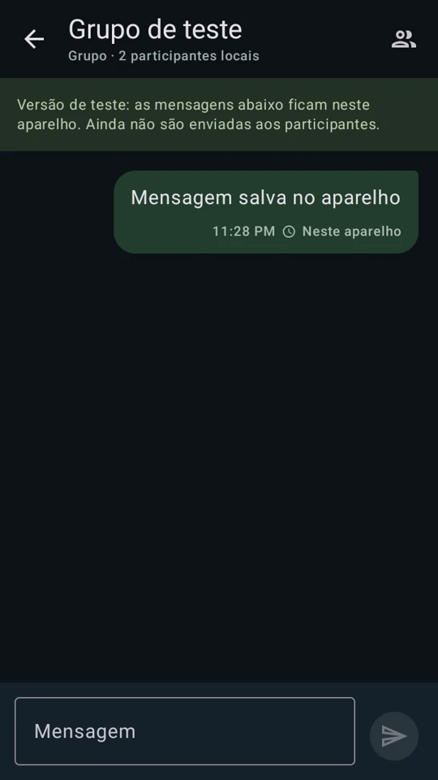
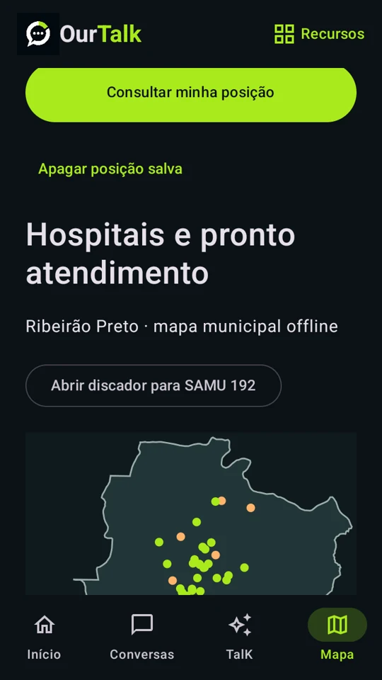
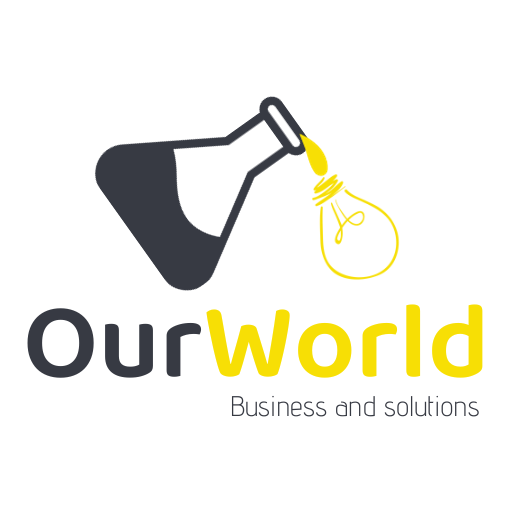
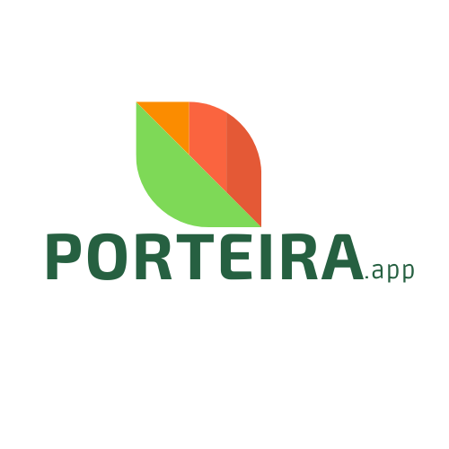
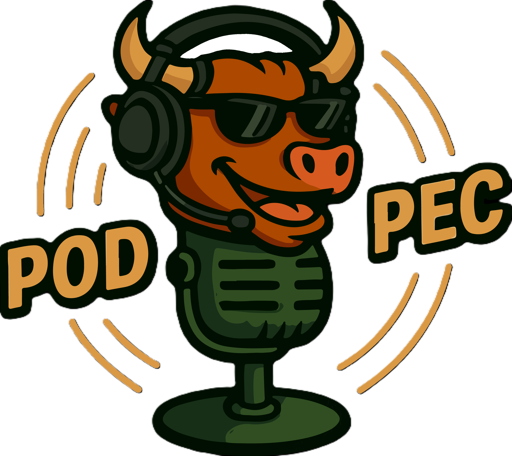

Você escolhe com quem se conectar, pode recusar convites e bloquear contatos.
CONECTADOS PELO QUE IMPORTA
Quando a internet falha,
saiba onde buscar apoio.
O OurTalk é um aplicativo gratuito e de código aberto em desenvolvimento. Ele reúne mapas de saúde, guias e um checklist para consultar sem internet. Também estamos construindo a conversa entre aparelhos próximos.
Quero saber quando lançar ↗EM DESENVOLVIMENTO Ainda sem download público.
9:41••• ▰
Offline
Olá, Silvio.
Como podemos
ajudar?
27°
Ribeirão Preto
Informações da sua comunidade
Avisos salvos terão fonte, data e validade. Relatos de moradores serão identificados separadamente.
Prévia · nenhum comunicado real publicado.Seus recursos
Conecte com consentimento.
Conversas
Suas pessoas.
Suas conversas.
Os contatos aceitos aparecerão aqui. Comece trocando um convite.
Você está invisível
Apareça só
quando quiser.
A descoberta próxima será temporária e dependerá de autorização.
A prévia não procura aparelhos nem mostra pessoas reais.
Conecte com consentimento.
Adicionar
uma pessoa
Fluxo planejado: convite → aceite → conversa.
Telefone e localização pública não são necessários.
Um convite.
Uma conexão.
Na versão final, você poderá mostrar seu QR Code ou ler o convite da outra pessoa.
Área reservada ao QR Code
O código será gerado após definir e implementar o protocolo de identidade.
Esta prévia não liga a câmera nem gera uma identidade real. O convite não compartilha documentos, ficha de saúde ou localização.
Compartilhe
um convite.
Um código temporário poderá ajudar duas pessoas a se encontrar e confirmar o contato.
Código ainda não disponível
A validade e a troca segura de identidade serão definidas no protocolo.
Um código não cria conexão à distância sem um transporte disponível. Os dois precisam ter um meio de comunicação compatível.
Você escolhe
aparecer.
A descoberta próxima será temporária e dependerá da sua autorização.
Descoberta desligada
Nenhuma busca por aparelhos está sendo executada nesta prévia.
Pessoas próximas não terão acesso automático às suas conversas. Bloquear e recusar convites farão parte do fluxo.
Privacidade por princípio
Suas conversas.
Seu controle.
Requisito proposto para mensagens privadas. Protocolo, chaves e verificação de identidade ainda precisam de implementação e auditoria.
Documentos, saúde e localização não serão enviados automaticamente para contatos.
Proximidade, presença e tráfego podem revelar metadados. O projeto deve reduzir sua exposição; não promete anonimato absoluto.
Esta interface é conceitual. Não existe troca de mensagens reais ou criptografia implementada neste protótipo.
TalK · seu assistente
O que você
precisa saber?
Na versão final, o assistente consultará os conteúdos salvos no aparelho, mostrando fonte e atualização.
Demonstração de navegação. Não há modelo de IA conectado e nenhuma resposta é gerada.
Cidade demonstrativa
Ribeirão Preto
Mapa online de apresentação · © OpenStreetMap
Esta prévia usa um mapa online. Download de mapas e consulta offline ainda serão implementados.
Ribeirão Preto · demonstração
Locais
importantes
Referências reais para apresentar o atlas da cidade.
Hospital das Clínicas — Campus
Rua Tenente Catão Roxo, 3.200
Ribeirão Preto · SP
Parque Curupira
Parque Prefeito Luiz Roberto Jábali
Ribeirão Preto · SP
Fontes consultadas em 08/11/2026. Atendimento, lotação e acesso atual não confirmados. O parque não está sendo indicado como abrigo ou ponto de emergência.
Ribeirão Preto
Tempo e clima
27°Exemplo ilustrativo
A versão final mostrará a última previsão baixada, com fonte, horário e validade. Sem conexão, os dados envelhecem.
Este valor não é uma previsão real. Não há serviço meteorológico conectado.
Ribeirão Preto
Sua comunidade
Comunicados oficiais e relatos da comunidade terão identificação distinta, origem, data e validade.
Sem comunicados nesta prévia
Nenhum alerta real está sendo recebido.
Uma comunidade começa com alguém.
Convide quem
importa para você.
Compartilhe o projeto para que mais pessoas conheçam o OurTalk.
ourtalk.com.br
O aplicativo ainda não está disponível. O convite aponta para o domínio de apresentação, cuja publicação está em preparação. Não adiciona um contato automaticamente.
Seu apoio, organizado.
Recursos
Essenciais
Pessoal
Preparação
Comunidade
Nenhum recurso encontrado.
Prévia do produto · funções em desenvolvimento.
Bíblia
Leitura para
o seu momento.
Livros, versículos, busca, favoritos e tamanho de texto ajustável.
A tradução para distribuição gratuita ainda será escolhida conforme a licença.
Recurso em planejamento · demonstração visual.Minha saúde
Informações que
ajudam a cuidar.
Alergias, medicamentos e contatos de emergência em uma ficha que você controla.
Nesta prévia não coletamos informações de saúde.
Recurso em planejamento · demonstração visual.Meu cofre
O importante,
com você.
Documentos protegidos e disponíveis no aparelho, com acesso controlado.
Nesta prévia não há envio nem armazenamento de documentos.
Recurso em planejamento · demonstração visual.Preparar
Um passo
de cada vez.
Organize contatos, água, alimentação e energia no plano da sua família.
Os checklists e as orientações serão desenvolvidos e revisados.
Recurso em planejamento · demonstração visual.Vamos encontrar
apoio.
Um pedido de ajuda terá localização opcional e confirmação de recebimento.
Esta é uma prévia.
Nenhum pedido será enviado.
O aplicativo ainda está em desenvolvimento.
Explore o celular: toque em Conversas, TalK, Mapa ou Recursos. O celular é uma demonstração do projeto; as telas reais do Android estão mais abaixo.
O OurTalk apoia a preparação e a comunicação quando a conexão falha. Seu funcionamento depende do aparelho, da energia disponível, dos dados baixados e da presença de outros usuários. Não garante comunicação ou resgate em qualquer catástrofe e não substitui os serviços de emergência.
O próximo passo precisa de pessoas como você.Estamos captando recursos para desenvolver e testar o OurTalk.
Sem anúnciosSem venda de dadosCódigo abertoDoações voluntárias
UM PROJETO SOBRE PESSOAS
Ninguém deveria
enfrentar o inesperado
sozinho.
Um apagão muda a rotina em segundos. Encontrar informação, falar com alguém ou saber onde buscar apoio pode se tornar difícil.
O OurTalk nasce para ajudar antes e durante esses momentos. Estamos desenvolvendo uma plataforma que reúne comunicação entre aparelhos, conteúdo salvo e ferramentas de preparação em uma experiência simples e acolhedora.
Projeto em desenvolvimento — download público ainda indisponível.
UM EXEMPLO EM RIBEIRÃO PRETO
Acabou o sinal.
O que ainda funciona?
Imagine que o bairro ficou sem internet e você precisa encontrar uma UPA. O mapa que vem no aplicativo continua disponível.
Encontre um local de atendimento
Abra Mapa, filtre por pronto atendimento ou pesquise pelo nome. A versão interna traz 31 unidades de saúde cadastradas em Ribeirão Preto, incluindo as cinco unidades municipais de pronto atendimento.
Veja onde você está
Com a permissão de localização e recepção de satélites, seu aparelho pode mostrar sua posição e a precisão da leitura sem rede celular. O mapa mostra endereços, mas ainda não traça rotas.
Consulte o que ficou no aparelho
Os guias do TalK, seus favoritos e seu checklist continuam acessíveis. Sem GPS, você ainda pode abrir o mapa e procurar a unidade pelo nome.
Ajude a levar mapas offline a mais cidades.
Contribuições ajudam a organizar fontes, conferir endereços e tornar os mapas mais acessíveis.
TELAS DO ANDROID
Veja o OurTalk
por dentro.
Capturas da versão interna do Android. Veja como o app organiza a tela inicial, as conversas e o mapa de saúde de Ribeirão Preto.



RECURSOS E PRÓXIMAS ENTREGAS
O que você vai
encontrar no OurTalk.
Veja o que já funciona na versão interna, o que é experimental e o que ainda estamos construindo.
Mapa offline
O mapa de Ribeirão Preto vem no app, com hospitais e unidades de saúde. Abrigos confirmados, água, recarga, outras cidades e rotas offline estão no roteiro.
TalK, biblioteca e checklist
Pesquise guias salvos, marque favoritos e organize itens como contatos importantes e ponto de encontro. O TalK já busca por palavras; a IA generativa está planejada.
Conversas e pessoas por perto
Contatos e grupos podem ser organizados no aparelho. Para trocar mensagens individuais com alguém por perto, os dois precisam ativar a função, aceitar e comparar um código. A conexão depende dos aparelhos e do alcance do rádio.
Convites, grupos e iPhone
Um convite para conhecer o projeto não adiciona ninguém automaticamente. Convites de contato, mensagens em grupo e comunicação entre Android e iPhone fazem parte das próximas etapas.
Previsão, comunicados e pedidos de ajuda
A ideia é poder consultar a última previsão e os comunicados salvos, sempre com fonte e data. O app ainda não envia SOS, não despacha socorro e não atualiza avisos sem conexão.
Recursos pessoais e conteúdos
O roteiro inclui um cofre para documentos, informações pessoais de saúde e uma biblioteca ampliada, com conteúdos opcionais e licenciados. Você decide o que guardar.
Ajude a construir a próxima etapa.
Seu apoio ajuda no desenvolvimento, na acessibilidade e na infraestrutura. Qualquer ajuda é bem-vinda.
PREPARE SUA ENERGIA
O que você precisa
manter ligado?
Informe o consumo dos seus aparelhos. Veja a reserva de bateria e a geração solar estimadas para sua rotina.
Como calculamos
Consumo diário: autoconsumo do inversor × horas ligado + quantidade × potência (W) × horas de uso, ou quantidade × energia por carga (Wh) × cargas por dia. Bateria nominal: consumo diário × dias × (1 + reserva) ÷ eficiência de saída ÷ fração utilizável. Ah = Wh ÷ tensão nominal.
Painéis para consumo diário: energia diária com reserva e perdas ÷ horas de sol pleno ÷ rendimento solar. Para também repor uma reserva vazia, somamos a energia dessa reserva dividida pelos dias de reposição. Potência contínua do inversor: soma das cargas AC simultâneas + 25%; pico de partida é avaliado separadamente.
Use consumo medido ou dados da etiqueta. Para celulares, consulte a capacidade em Wh; se houver apenas mAh, Wh = mAh × tensão nominal ÷ 1.000. A potência máxima do carregador não é a energia da bateria. Para geladeiras e cargas cíclicas, use consumo medido e tempo efetivo de funcionamento.
Esta é uma estimativa de dimensionamento, não uma simulação climática. Nuvens, sombra, envelhecimento e temperatura alteram a autonomia. Painéis dobráveis ligados a uma estação ou controlador compatível recarregam melhor que o pequeno painel incorporado em um power bank.
Referências: Etiquetas e consumo · Governo da Austrália · Variação da geração solar · PVWatts.
PRIVACIDADE FAZ PARTE DO PROJETO
Conexão com pessoas.
Controle sobre seus dados.
Convide. Confirme. Converse.
Meus contatos e pessoas por perto são experiências distintas. A descoberta deve ser temporária e autorizada; um convite de divulgação não adiciona ninguém automaticamente.
O pessoal permanece pessoal.
Documentos, saúde e posição não serão compartilhados automaticamente. Seguir uma rota não deve publicar sua localização.
Segurança que precisa ser comprovada.
Criptografia de ponta a ponta e proteção dos dados são requisitos. Serão implementadas, testadas e revisadas antes de anunciar essas funções como disponíveis.
ACOMPANHE A CONSTRUÇÃO
Cada etapa.
À vista de todos.
Veja onde estamos, o que já avançou e os próximos passos do OurTalk.
EM DESENVOLVIMENTO
Da ideia às primeiras experiências.
Estamos preparando o aplicativo e reunindo apoio para desenvolver e testar seus recursos.
Atualizado em
Identidade e apresentação
Identidade visual definida e apresentação do projeto criada.
Experiência do aplicativo
Telas navegáveis de conversas, TalK, mapas e recursos em refinamento.
Desenvolvimento e testes
Validar comunicação local, navegação offline e segurança em aparelhos reais.
Atualizações do projeto
Uma primeira experiência para explorar
Apresentação do OurTalk, mockup navegável e área de contribuição preparados. O aplicativo segue em desenvolvimento.
CONSTRUA COM A COMUNIDADE
O OurTalk é
código aberto.
O código do aplicativo Android e do site é público no GitHub sob a licença MIT. Qualquer pessoa pode consultar, reutilizar, adaptar e propor melhorias.
Contribua com código
O guia explica como rodar o projeto e enviar uma alteração para revisão.
Ler o guia de contribuição ↗Sugira uma melhoria
Conte o que ajudaria na sua comunidade ou indique um problema que encontrou no site.
Ver e abrir sugestões no GitHub ↗CONSTRUA COM A GENTE
Ajude a construir
o OurTalk.
Qualquer ajuda é bem-vinda. Sua contribuição apoia o desenvolvimento do aplicativo, a manutenção dos mapas e a acessibilidade.
Escolha um valor, gere o Pix e pague no aplicativo do seu banco. Se preferir, você também pode contribuir com código e ideias ou apoiar como empresa.
Faça parte desse começo.
Escolha quanto deseja contribuir.
R$
Copie e cole no aplicativo do seu banco.
CADA CONTRIBUIÇÃO CONSTRÓI ESSE FUTURO
Já arrecadamos
Contribuições para o desenvolvimento do OurTalk.
Você acompanha cada etapa.
Publicaremos aqui a evolução da arrecadação e os relatórios de aplicação dos recursos: desenvolvimento, testes, infraestrutura e acessibilidade.
Cada contribuição faz a diferença.
Fazer parte dessa construção ↗QUEM ESTÁ JUNTO DESDE O COMEÇO
Um projeto aberto.
Uma rede que cresce.
Quem acredita e constrói com a gente.



SUA EMPRESA TAMBÉM PODE FAZER PARTE
Há mais de uma forma de apoiar.
Contribuições financeiras, aparelhos para testes, infraestrutura, dados autorizados e conhecimento técnico podem ajudar na construção do OurTalk.
COMPROMISSO COM QUEM APOIA
Antes de apoiar,
saiba mais.
O aplicativo já está funcionando?
Já existe uma versão interna Android com mapa de saúde, guias e checklist offline. A conversa por perto é experimental. O aplicativo ainda não tem download público.
Onde posso acompanhar a transparência?
Esta seção receberá os relatórios de arrecadação, aplicação de recursos e evolução do projeto. Nenhum relatório financeiro foi publicado nesta versão. Não divulgaremos dados pessoais dos doadores.
Vou conseguir ver onde estou sem sinal?
Sim, se você permitir a localização e o aparelho conseguir receber o sinal dos satélites. O mapa de Ribeirão Preto já está no app. Sem posição atual, ainda é possível procurar endereços no mapa. O aplicativo ainda não traça rotas.
Os locais estarão disponíveis durante uma emergência?
O mapa deve informar localização, fonte e última verificação. Um hospital ou ponto cadastrado pode estar indisponível. Não vamos tratar uma localização conhecida como garantia de atendimento nem um parque como abrigo sem confirmação oficial.
O que muda com minha doação?
Ela apoia o desenvolvimento, testes em aparelhos, dados, infraestrutura e acessibilidade. Não compra acesso antecipado, não garante prazo de lançamento e não transforma uma função planejada em entrega concluída. A aplicação dos recursos deverá ser relatada com movimentações reais.
Onde posso acessar o código?
O código já é público sob licença MIT. Você pode revisar, sugerir melhorias e contribuir com código ou acessibilidade. Conheça o repositório no GitHub e o guia de contribuição para participar.
Como este site trata meus dados?
O cadastro de aviso de lançamento recebe o e-mail e/ou WhatsApp que você informar, mediante sua autorização. Esses contatos serão usados para avisar sobre a disponibilidade do aplicativo. O código Pix é gerado no seu navegador. Veja a página de privacidade para saber mais e cancelar o cadastro.
SAIBA QUANDO CHEGAR
O primeiro aviso
pode ser seu.
Deixe seu contato para saber quando o OurTalk estiver disponível para download.
Estar junto faz toda a diferença.
Vamos construir esse futuro. ↗